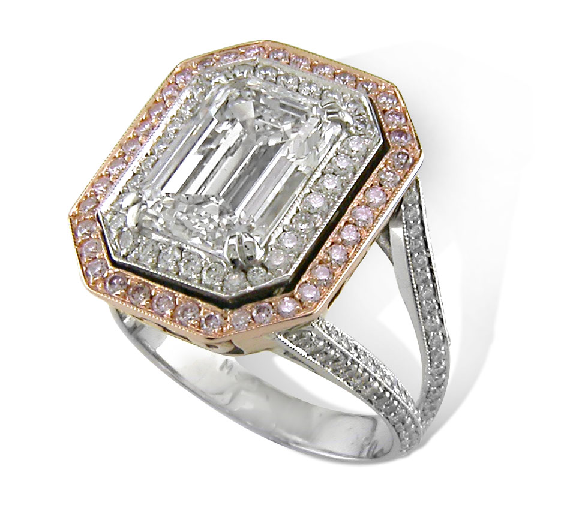
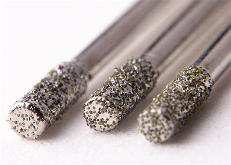
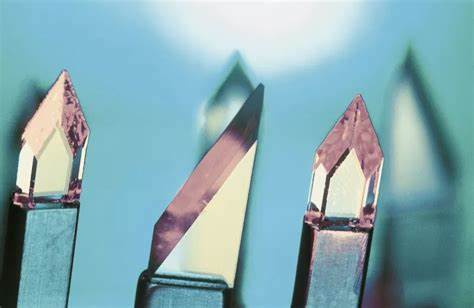
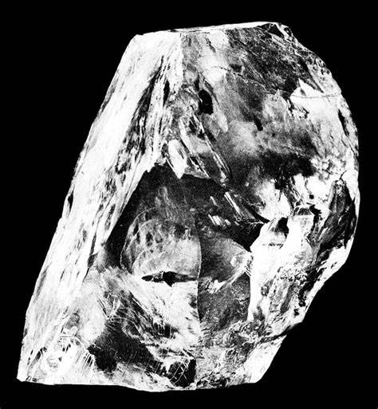
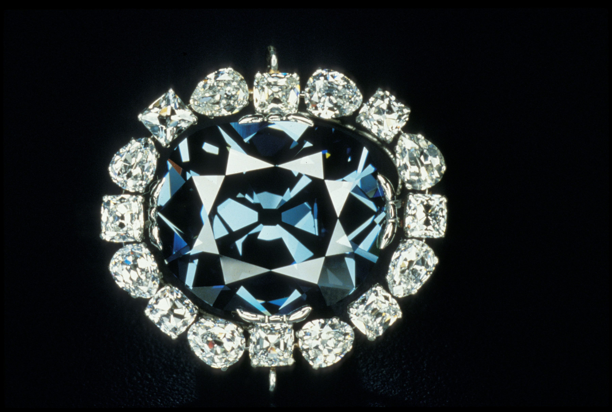
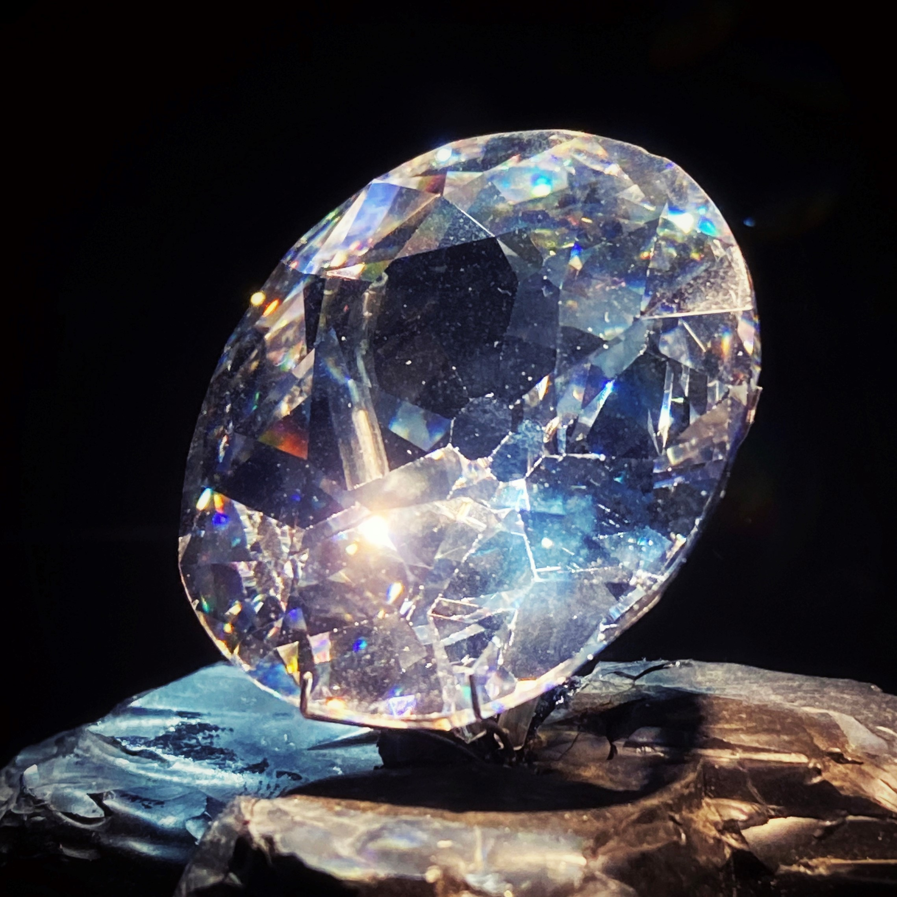
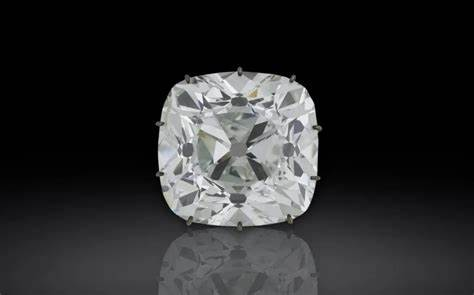

Diamond: Formation, Types, History, Mining, and Care
Chemical Formula: C (Carbon)
Color: Colorless, Yellow, Brown, Blue, Pink, Green, Red, Black
Hardness: 10 on the Mohs scale
Crystal System: Cubic (Isometric)
Localities: Russia, Botswana, Canada, South Africa, Australia
Common Uses: Jewelry, Industrial Cutting Tools, Semiconductors, Medical Equipment
Diamond is the most well-known and coveted gemstone in the world, celebrated for its exceptional hardness, brilliance, and symbolic significance. Composed of carbon atoms arranged in a crystal lattice, diamond is the hardest known natural material on Earth. This remarkable stone has been cherished for thousands of years not only for its beauty but also for its associations with love, power, and wealth.
Diamonds are commonly associated with engagement rings, symbolizing eternal love and commitment. However, they are also prized in various industrial applications due to their unparalleled hardness. The word "diamond" is derived from the Greek word "adamas," meaning invincible or indestructible, reflecting the gemstone's supreme durability.
Formation and Types of Diamond
Diamonds form deep within the Earth's mantle under extreme pressure and temperature conditions, typically at depths of 140 to 190 kilometers. The process takes millions to billions of years, with diamonds being brought to the surface through volcanic eruptions in a type of rock known as kimberlite.
There are several types of diamonds classified based on their physical and chemical properties:
- Natural Diamonds: These are formed naturally over billions of years and are typically mined from kimberlite pipes or alluvial deposits.
- Synthetic Diamonds: Also known as lab-grown or man-made diamonds, these are created in a controlled environment using high-pressure, high-temperature (HPHT) or chemical vapor deposition (CVD) methods. They are chemically and physically identical to natural diamonds but are produced much more quickly.
- Fancy Colored Diamonds: While most diamonds are colorless, some exhibit a range of colors due to the presence of trace elements or structural anomalies. These include blue, yellow, pink, and even red diamonds, with the intensity of the color significantly affecting their value.
Structure and Properties of Diamond
Diamonds belong to the cubic (isometric) crystal system and have a face-centered cubic lattice structure. The unique arrangement of carbon atoms in a diamond gives it extraordinary properties:
- Hardness: Diamond ranks 10 on the Mohs scale, making it the hardest known natural material. This hardness is due to the strong covalent bonds between carbon atoms.
- Luster: Diamonds exhibit an adamantine luster, which is the highest level of brilliance seen in any gemstone. This luster is a result of their high refractive index.
- Cleavage: Diamonds have perfect cleavage in four directions, meaning they can be split along these planes. This property is both a benefit and a challenge in diamond cutting.
- Thermal Conductivity: Diamonds are excellent conductors of heat, which is why they feel cold to the touch and are used in various industrial applications.
Color: Most diamonds are colorless or have a slight yellow or brown tint. However, the presence of other elements can result in fancy colors such as blue (boron), yellow (nitrogen), or pink (structural distortions).
Uses of Diamond
Diamonds are used in various applications ranging from high-end jewelry to industrial tools:
Jewelry
Diamonds are the most popular gemstone for engagement rings, wedding bands, and other fine jewelry. Their brilliance and durability make them ideal for everyday wear. Diamonds are often cut into various shapes, including round, princess, emerald, and cushion, each maximizing the stone's light performance.
Industrial Applications
Due to their extreme hardness, diamonds are used in cutting, grinding, and drilling tools. Diamond-tipped saws, drills, and abrasive wheels are commonly used in construction, mining, and manufacturing.
Technology
Diamonds are used in advanced technology, such as semiconductors, due to their superior thermal conductivity and resistance to wear.
Medical Equipment
Diamonds are utilized in medical devices, such as scalpels and lasers, where precision and durability are crucial.
History of Diamond
The history of diamonds is rich and varied, with the gemstone playing a significant role in various cultures and societies:
- Ancient India: Diamonds were first discovered in India around the 4th century BC, where they were traded and revered for their ability to refract light. Early Indians believed diamonds had protective powers and used them in religious icons and amulets.
- The Diamond Trade: By the 13th century, diamonds had made their way to Europe, where they became symbols of wealth and status. The discovery of diamonds in Brazil in the 18th century and later in South Africa in the 19th century revolutionized the global diamond trade.
- The De Beers Influence: In the late 19th century, the De Beers mining company was established in South Africa, gaining control of the diamond market. The company is credited with the famous slogan “A Diamond is Forever,” which solidified the diamond's association with love and marriage.
- Famous Diamonds: Over the centuries, numerous famous diamonds have captivated the world, including the Hope Diamond, the Koh-i-Noor, and the Cullinan Diamond. These stones are often associated with myths, legends, and royal history.
Unusual Varieties of Diamond
While colorless diamonds are the most common, several unusual varieties are highly prized:
Fancy Colored Diamonds
These diamonds come in various hues such as pink, blue, yellow, green, and even red. The color is due to the presence of trace elements or structural anomalies. Among these, red diamonds are the rarest and most valuable.
Canary Diamonds
These are diamonds with a vibrant, intense yellow color, often referred to as “canary yellow.” The color is caused by nitrogen impurities within the crystal structure.
Black Diamonds
Also known as carbonado, black diamonds are opaque and have a dark metallic luster. They are popular in modern, unconventional jewelry designs.
Chameleon Diamonds
These are diamonds that change color temporarily when exposed to light or heat, shifting between shades of yellow, green, and brown.
Enhancement of Diamond
To improve their appearance or marketability, diamonds may undergo various enhancement treatments:
- Laser Drilling: This process involves using a laser to create tiny tunnels in the diamond, allowing inclusions to be bleached or removed. This treatment is usually applied to stones with visible flaws.
- Fracture Filling: Diamonds with surface-reaching fractures can be filled with a glass-like substance to improve their clarity. The filling material is typically colorless and difficult to detect without magnification.
- High-Pressure High-Temperature (HPHT) Treatment: This process is used to alter the color of diamonds, particularly to remove brownish tones and produce colorless stones or to enhance the color of fancy-colored diamonds.
- Irradiation: Irradiation is used to change or enhance the color of a diamond, often resulting in vivid greens, blues, or yellows. This treatment is usually followed by annealing (heating) to stabilize the color.
Famous Finds and Diamonds
Several diamonds have become legendary due to their size, quality, or history:
The Cullinan Diamond
Discovered in South Africa in 1905, the Cullinan Diamond is the largest gem-quality diamond ever found, weighing 3,106 carats before cutting. It was cut into several stones, the largest of which is set in the British Crown Jewels.
The Hope Diamond
Known for its deep blue color, the Hope Diamond is one of the most famous diamonds in the world. It has a storied history, including tales of a curse, and is now housed in the Smithsonian Institution.
The Koh-i-Noor
This 105.6-carat diamond, originating from India, is one of the most famous gems in the world. The Koh-i-Noor has been part of various royal treasuries and is currently set in the British Crown.
The Regent Diamond
Discovered in India in the early 18th century, the Regent Diamond has adorned various royal crowns and swords. It is known for its exceptional clarity and cut.
Sourcing Locations and Mining
Diamonds are sourced from several key locations around the world, with specific regions known for producing high-quality stones:
- Africa: Africa is the largest producer of diamonds, with countries like Botswana, South Africa, and Namibia leading in production. Botswana is known for high-quality large diamonds, while Namibia's coastal diamonds are known for their size and quality.
- Russia: Russia is the world's largest producer of diamonds by volume, with the majority coming from the Yakutia region in Siberia. Russian diamonds are known for their excellent quality and large sizes.
- Canada: Canada is a relatively new player in the diamond industry but has quickly become one of the top producers. The country's diamonds are known for their ethical sourcing and high quality, with major mines located in the Northwest Territories.
- Australia: Australia is famous for its production of fancy-colored diamonds, particularly pink and red diamonds from the Argyle mine. Although the mine closed in 2020, its legacy continues.
Exploration and Mining
Diamond exploration and mining are complex processes that require significant investment and expertise:
Exploration
The process begins with geological surveys and sampling to locate kimberlite pipes or alluvial deposits. Advanced techniques such as geophysical surveys, remote sensing, and core drilling are used to pinpoint diamond-rich areas.
Mining Methods
There are two primary methods of diamond mining: open-pit mining and underground mining. Open-pit mining is used for deposits near the surface, while underground mining is employed for deeper deposits. Alluvial mining involves extracting diamonds from riverbeds or ocean floors.
Processing
Once the diamonds are extracted, they are processed to remove the surrounding rock and concentrate the diamonds. This involves crushing the ore, washing, and using techniques like x-ray sorting or grease belts to separate diamonds from other materials.
Identifying Authentic Diamonds
Identifying an authentic diamond requires a combination of visual inspection and technical analysis:
- The Four Cs: Diamonds are graded based on the Four Cs: Cut, Color, Clarity, and Carat weight. A certified gemologist can assess these characteristics to determine a diamond's authenticity and quality.
- Testing Methods: Common tests for authenticity include the water test, fog test, and checking for inclusions under magnification. However, these are not foolproof, and professional equipment like a diamond tester, which checks thermal conductivity, is often used.
- Certification: Authentic diamonds should come with a certification from a reputable gemological laboratory such as the Gemological Institute of America (GIA) or the International Gemological Institute (IGI). These certificates provide detailed information about the diamond's characteristics and authenticity.
Buy & Sell Authentic Diamonds Here
Cutting and Polishing Diamonds
Cutting and polishing diamonds is an art and science that transforms rough stones into brilliant gemstones:
- The Cutting Process: The process begins with planning, where the cutter studies the rough stone to determine the best way to maximize its yield and quality. The stone is then cleaved or sawed, followed by bruting to shape it.
- Faceting: The most critical step is faceting, where facets are carefully cut into the stone to enhance its brilliance and fire. The round brilliant cut is the most popular, but other shapes like princess, emerald, and cushion are also common.
- Polishing: Finally, the diamond is polished to achieve a smooth, reflective surface. Polishing involves using diamond dust to refine the facets and enhance the stone's brilliance.
- Master Cutters: The quality of a diamond’s cut significantly impacts its value. Master cutters with years of experience ensure that each diamond achieves optimal brilliance, proportion, and symmetry.
Diamond Market and Trade
The diamond market is one of the most well-established and regulated in the world, with a complex value chain from mine to market:
- Value Determinants: The value of a diamond is primarily determined by the "Four Cs": Cut, Color, Clarity, and Carat weight. Each of these factors plays a crucial role in assessing the quality and price of the stone.
- Global Trade: The global diamond trade is dominated by major mining companies like De Beers, Alrosa, and Rio Tinto. Diamonds are mined in several countries, with major sources including Russia, Botswana, Canada, and Australia.
- Ethical Considerations: The diamond industry has faced scrutiny over the issue of conflict diamonds, which are mined in war zones and sold to finance armed conflict. The Kimberley Process was established to prevent the trade of these diamonds, ensuring that consumers can buy ethically sourced stones.
- Market Trends: The demand for diamonds remains strong, particularly in the bridal jewelry market. However, the rise of lab-grown diamonds has introduced a new dynamic, offering consumers a more affordable and ethically produced alternative.
Buy & Sell Authentic Diamonds Here
Caring for Diamond
Despite their hardness, diamonds require proper care to maintain their brilliance:
- Cleaning: Regular cleaning is essential to keep diamonds sparkling. Use warm soapy water and a soft brush to remove dirt and oils. Avoid harsh chemicals as they can damage the metal settings.
- Storage: Store diamonds separately from other gemstones to avoid scratches. Diamonds are hard enough to scratch other gems and even each other, so individual pouches or compartments are recommended.
- Handling: While diamonds are durable, they can chip along the cleavage planes if struck with enough force. Avoid wearing diamond jewelry during activities that could expose them to hard impacts.
- Professional Check-ups: Regular check-ups with a jeweler can help ensure that the diamond's setting remains secure and that the stone has not been damaged.
Metaphysical Properties of Diamond
Diamonds have been attributed with various metaphysical properties throughout history:
- Strength and Clarity: Diamonds are believed to bring clarity of thought and enhance the strength of character. They are thought to amplify the energy of other crystals and promote courage and determination.
- Healing: Some believe that diamonds can detoxify the body, balance metabolism, and strengthen the brain, nerves, and sensory organs.
- Spiritual Enlightenment: In spiritual practices, diamonds are said to aid in connecting with the divine, promoting spiritual growth and enlightenment.
- Protection: Historically, diamonds were worn as talismans to protect against poison, evil, and bad dreams. Their indestructibility symbolized invincibility in battle and unbreakable bonds in relationships.
See Also
- Related Crystals and Gemstones: Emerald
- Related Topics: The Fascinating World of Herkimer Diamonds: Unveiling the Mysteries of these Unique Gems